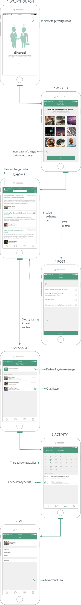

Solution
When I thought it's fine, I pushed myself 5% more
To make users have a fantastic experience through the workflow, Harvey and I summarized 3 rules which we
needed to follow when drawing the interfaces.
- Concision: It should be easy to use, and give users a sense of autonomy.
- Diversity: It allowed users to search for various types of value or resources
within the local community.
- Growth: It gave users the ability to rate their experience to better match them
with future providers and
support reciprocal exchanges.
Here were part of the details of the UI. After users lauchned InPlace, they would see walkthrough
pages to get a general idea about the APP. What I could do with the it.
Then they would be asked to answer several quesitons so that InPlace could later send customized content
them. There were four main parts of the APP.
First was the home page on which users
could view posting information. On its top left, there was a identification switch button. Users could
transfer their identification between the seniors and the youngsters by clicking the button.
Accordingly, the home page content would change. On the top right, it's the posting button.
After clicking it, users followed a straightforward four steps guidance to post message.
The second part was the message part. Users could chat with other people on this page. Besides, they
would receive system notifications on this page. The third part was the activity which seemed like a reminder calendor.
After users accepted a task from another one, InPlace would automatically save the task's schedule on this page. The last part was the
me part which contained users' personal information and history.

I represented my team to make the final presentation at the class and our design received
enthusiastic feedback. Moreover, my team got A for the class.